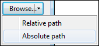
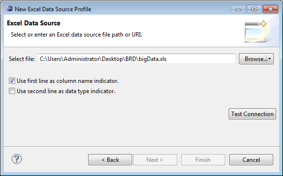
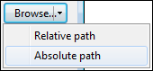
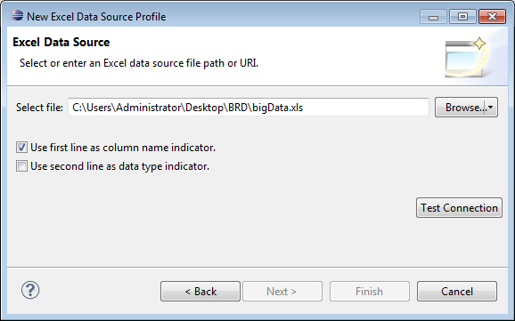

How to create an Excel data source 1 In Data Explorer, right-click Data Sources, then choose New Data Source. 2 In New Data Source, specify the following information: 1 Select Excel Data Source from the list of data source types. 2 In Data Source Name, type a name for the data source. 3 Choose Next. 3 In New Excel Data Source Profile, specify the workbook to use as the data source. 1 Use the drop-down menu for Browse to select either Relative path or Absolute path, as shown in Figure 2-6.  Figure 2-6 Selecting the type of path to specify 2 In Select file, specify the Excel file to use as the data source. 3 Select additional options, as necessary: Use first line as column name indicator. Use second line as data type indicator. Figure 2-7 shows an example of properties to connect to an Excel data source.  Figure 2-7 Connection properties for an Excel data source

